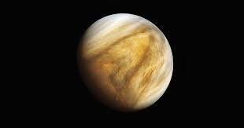

VENUS

A day on Venus is longer than a year.
Venus is hotter than Mercury despite being further away from the Sun.
Unlike the other planets in our solar system, Venus spins clockwise on its axis
Venus is the second brightest natural object in the night sky after the Moon
The average temperature on Venus is 864 degrees Fahrenheit (462 degrees Celsius).